EtherCAT Slave1.12.02 |
 |


|
EtherCAT Slave1.12.02 |
|
|
The CODESYS development system is after registration available for download free of charge from the CODESYS Store.
Please consult the system requirements in the CODESYS store for the development PC.
It is recommended to install the full package.
For the CODESYS runtime on the SITARA AM64x Processor, the CODESYS Control for Linux ARM64 SL is required.
Without a valid license, the CODESYS runtime including the fieldbus functionality will execute for two hours and then exit.
To install the runtime package, the CODESYS development system must be started as administrator.
Installation is performed from within the CODESYS Package Manager.
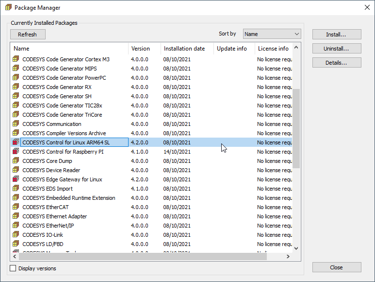
After the package is installed, the CODESYS runtime system must be installed on the AM64x SITARA Processor evaluation hardware.
Therefore prepare an SD Card with latest AM64x Arago Yocto Standard Image.
Log in to the Device via UART COM Port using user and password "root".
Setup the network interface settings required for your system.
For example fix your IP address of eth0 interface to static IP 192.136.0.200 as shown below in /etc/systemd/network/10-eth.network.
Open CODESYS Control for Linux ARM64 SL 4.2.0.0.package archive file and extract the files:
Dependancy/codemeter-lite_7.21.4611.501_arm64.deb
Delivery/codesyscontrol_linuxarm64_4.2.0.0_arm64.deb
Copy them over to the target and install:
scp Downloads/codemeter-lite_7.21.4611.501_arm64.deb root@192.136.0.200:~
scp Downloads/codesyscontrol_linuxarm64_4.2.0.0_arm64.deb root@192.136.0.200:~
Install
opkg -V2 install –nodeps –offline-root / –add-arch arm64:13 ./codemeter-lite_7.21.4611.501_arm64.deb
opkg -V2 install –offline-root / –add-arch arm64:13 ./codesyscontrol_linuxarm64_4.2.0.0_arm64.deb
add-arch is to get by the arm64 vs aarch64 definition difference with Debian
This is one-time and once there is CODESYS package manager support the Windows GUI can be used instead.
Execute the 2 hours limited runtime by:
Start the CODESYS development system and create a new standard project
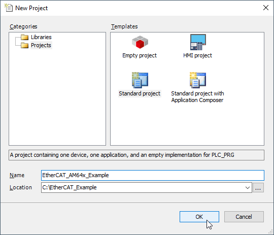
Select CODESYS Control for Linux ARM64 SL (3S - Smart Software Solutions GmbH) as a device and the programming language of your choice.
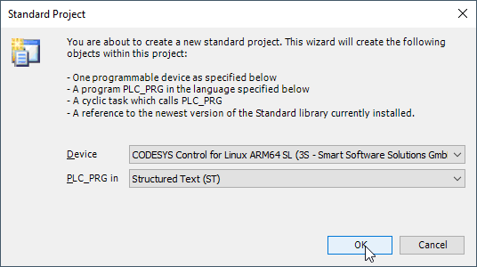
The development system creates the project structure and populates the structure of the device tree.
Before configuring the EtherCAT network, the matching device description file must be installed to the CODESYS device repository.
Navigate to Tools → Device Repository in the menu system and install the file TI AM243X.R5F Simple.xml which is part of the distribution.

Scan for a Gateway Device and select connected AM64x SITARA Processor.
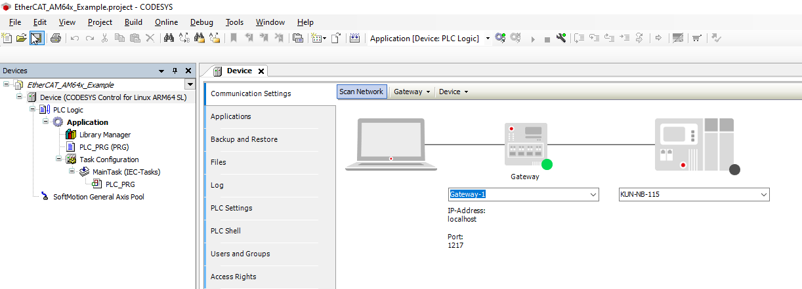 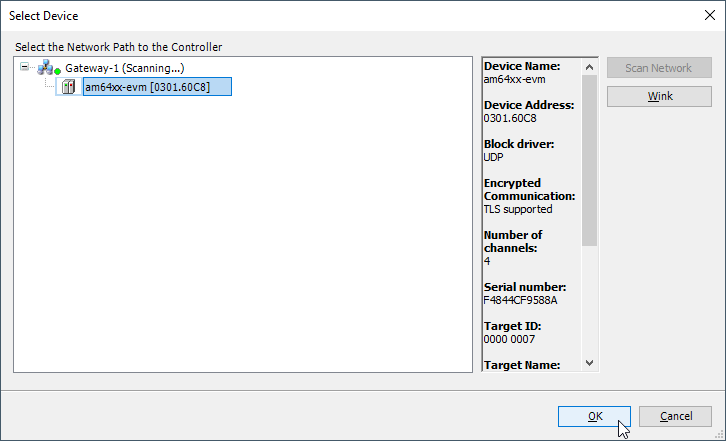
Continue to add the EtherCAT Master.
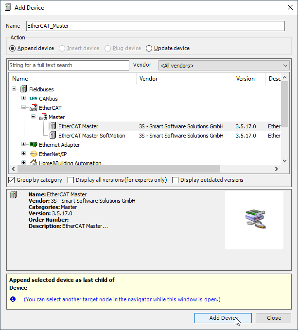
Select the MAC Address of the Ethernet Interface used by EtherCAT Network Communication.
Once complete you can enter Online mode and start your application.
This only starts the EtherCAT Master from where it is possible to scan for connected Slave devices.
Provided that device description has been installed already, the scan process will identify the EtherCAT Slave device, which can then be copied to the project.
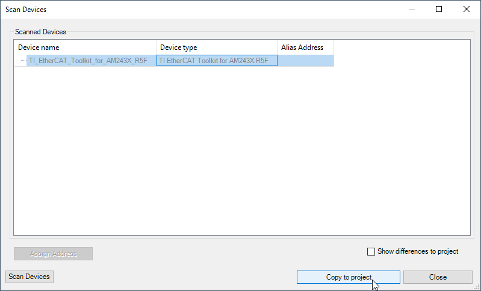
Exit Online mode, re-enter Online mode to download the new project structure, and start the application.
Open the Device General Settings tab and select the Expert settings .

Navigate to the "Expert Process Data" tab, which will be displayed after Expert settings is selected, and select "Load PDO Info from Device"
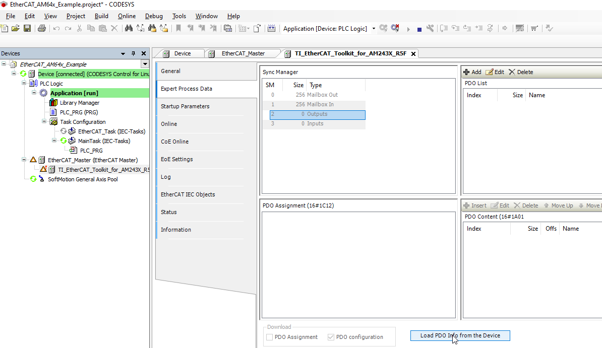
Finally exit Online mode, re-enter Online mode to download the new project structure, and start the application.
All devices should now be running.
NOTE:
The icon indicates that the EtherCAT devices are running in trial mode for 30 minutes.
After this time has elapsed, the trial mode will expire and the fieldbus will terminate the data exchange.
Now you are free to implement your program.
In CODESYS you can define your PLC application program in PLC_PRG.
In order to access the EtherCAT device objects, you first need to map variables to the PDOs defined in the device application.
This can be done by opening the PLC_PRG in Application and defining the Variables - for example:
The IOMAPPING_REFERENCE you can find in the "EtherCAT I/O Mapping" Tab of the Device Settings.
The EtherCAT Slave Simple Example is providing listed PDOs and objects:
| TXPDO at Index 1A00h | SubIndex2 at Index 2002h Subindex 2 |
|---|---|
| SubIndex4 at Index 2002h Subindex 4 | |
| SubIndex3 at Index 2002h Subindex 3 | |
| TXPDO2 at Index 1A01h | SubIndex1 at Index 2002h Subindex 1 |
| RXPDO at Index 1600h | i2c-leds at Index 2000h Subindex 2 |
| SubIndex3 at Index 2000h Subindex 3 | |
| SubIndex4 at Index 2000h Subindex 4 | |
| RXPDO2 at Index 1601h | SubIndex1 at Index 2000h Subindex 1 |
The EtherCAT CiA402 Example is providing the specified mandatory objects in TX- and RXPDOs for a total number of 3 axes:
| TXPDO at Index 1A00h | Statusword at Index 6041h Subindex 0 |
|---|---|
| Modes of Operation Display at Index 6061h Subindex 0 | |
| Position actual Value at Index 6064h Subindex 0 | |
| Velocity actual Value at Index 606Ch Subindex 0 | |
| Torque actual Value at Index 6077h Subindex 0 | |
| RXPDO at Index 1600h | Controlword at Index 6040h Subindex 0 |
| Modes of Operation at Index 6060h Subindex 0 | |
| Target position at Index 607Ah Subindex 0 | |
| Target velocity at Index 60FFh Subindex 0 | |
| Target torque at Index 6071h Subindex 0 |
The objects defined for Axes 2 and 3 are adding an offset of 800h and 1000h to objects described above.
Please find the EtherCAT IO Mapping for CiA402 Example.
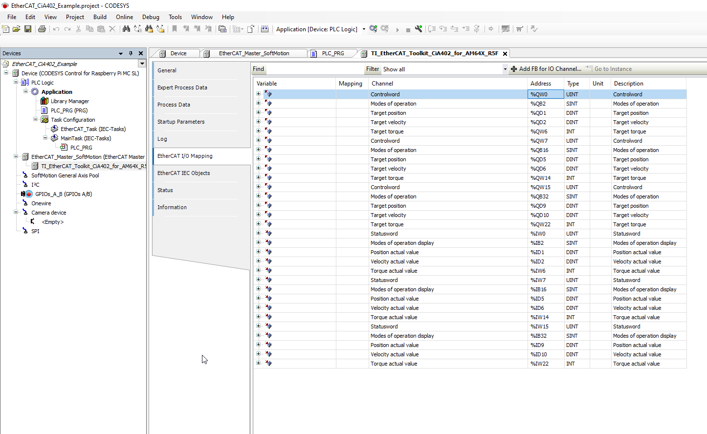
Find also a reference on how one can set variables for CiA402 Example project.
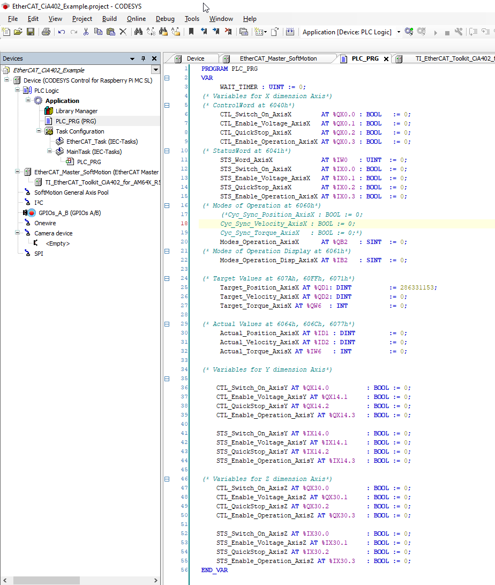
The EtherCAT Process Data LEDs can be addressed by mapping the first 8 bits in Process Output Image to boolean variables in your Structured Text Program.
After the mapping is done, you can assign/manipulate the variables in your program. For Example you can assign them within your program visualization.
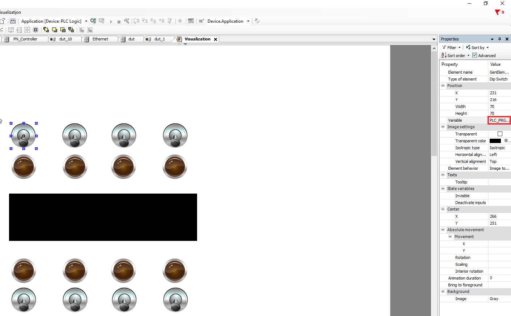
 1.9.1
1.9.1